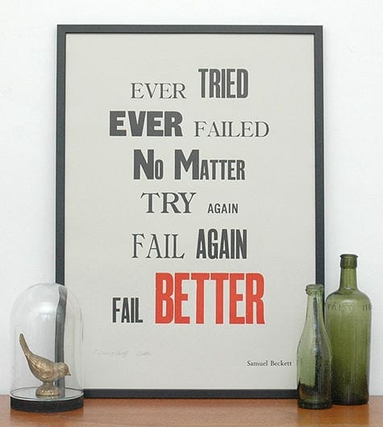
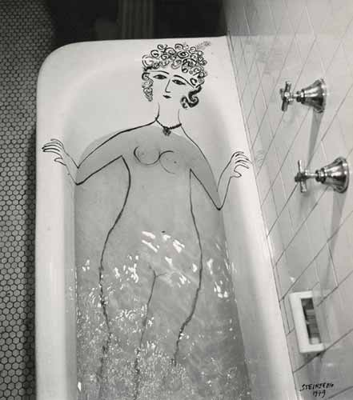
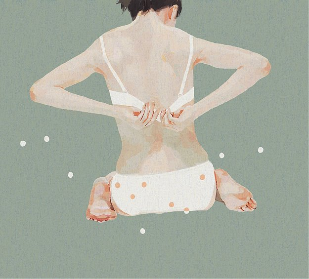
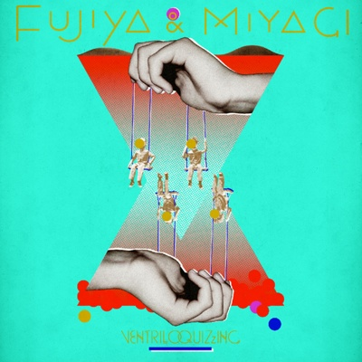

I heard a funny thing Somebody said to me “You know that I could be in love with almost everyone; I think that people are the greatest fun.” And I will be alone again tonight my dear
Gotye - Somebody That I Used To Know
Клип мне не понравился, а вот сам трек отличный.
Иоганн Себастьян Бах - Хорошо темперированный клавир (С. Рихтер)

Лампа
Прикольная лампа.
Fail better

Женщина в ванной

Начал уже жалеть, что ванная не моя. Так бы нарисовал бы себе женщину тоже. Автор.
Ludovico Einaudi - Reverie
Видео тоже очень клевое :)
Jun Kumaori

Забавные японские картинки.
Fujiya and Miyagi - Ventriloquizzing (2011)

Охрененные совершенно англичане. Очень рекомендую!
Le Voyage dans la lune (1902)
Охуенный какой трип!